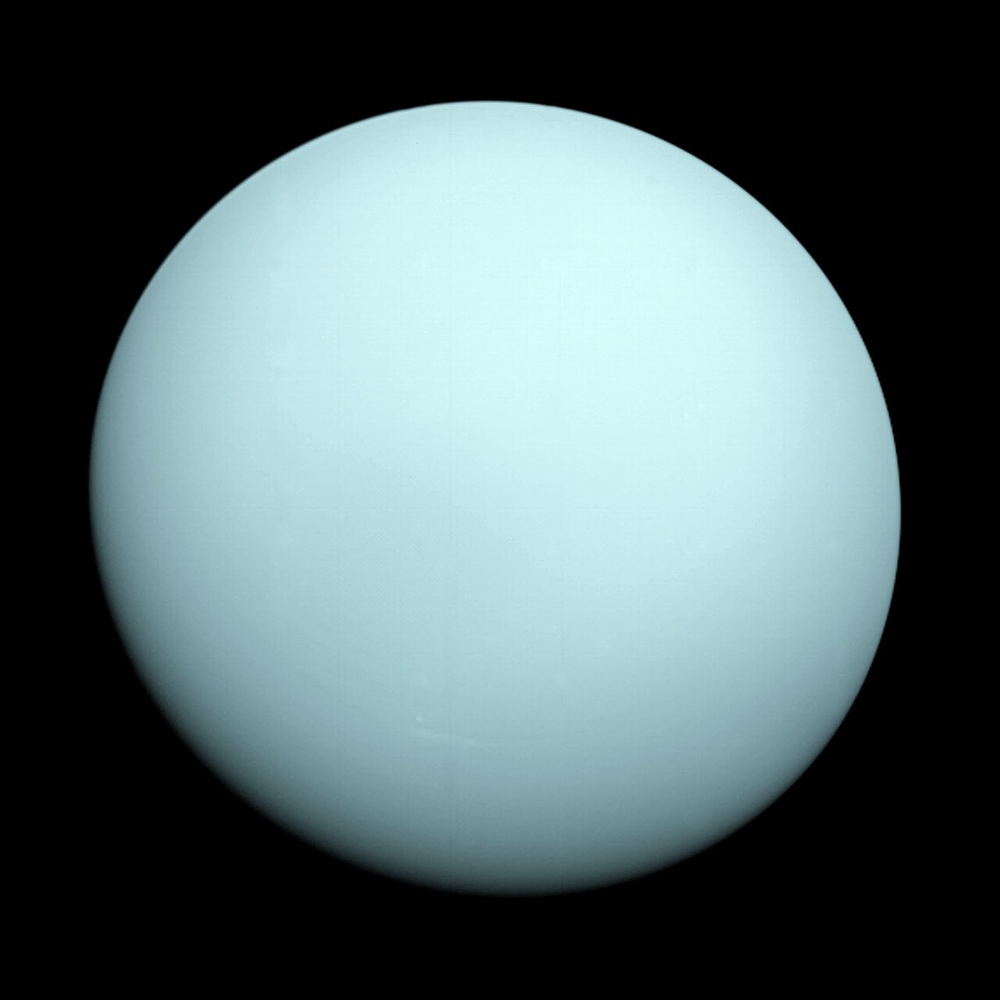
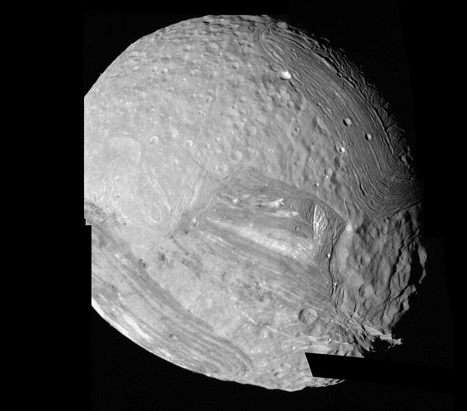
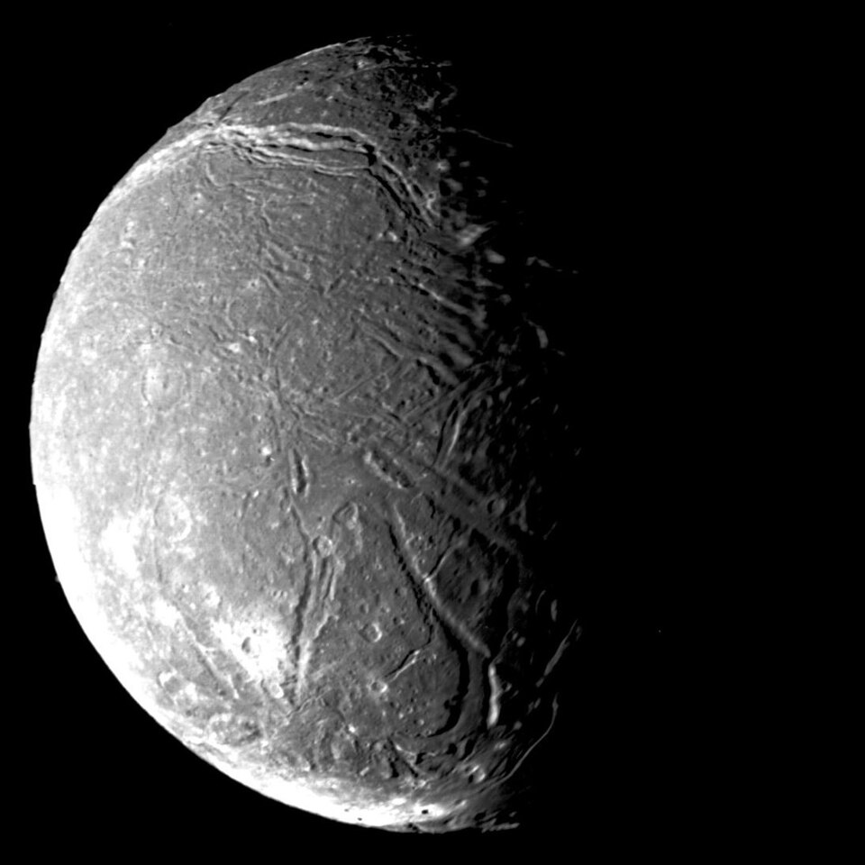
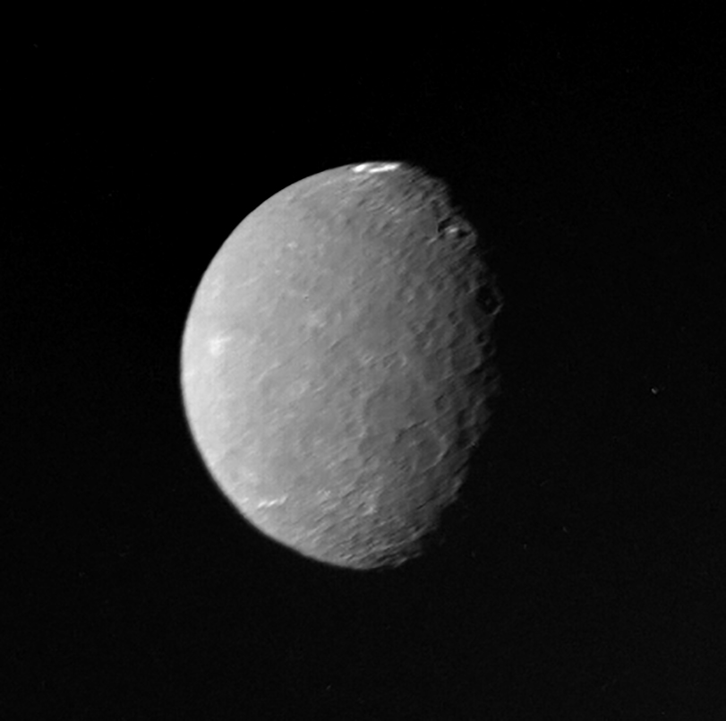
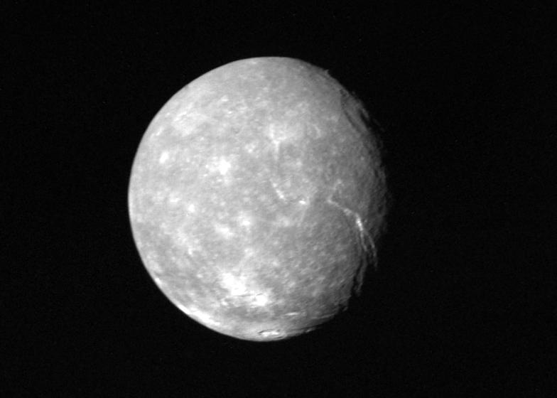
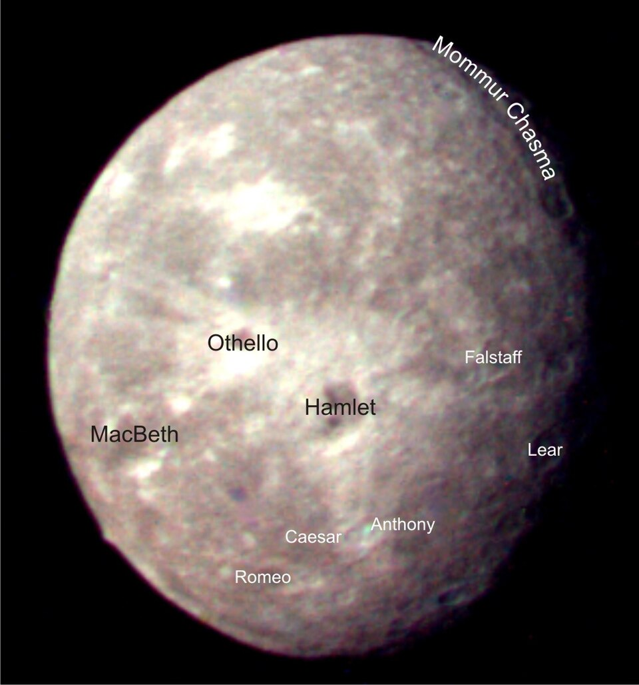

米兰达 Miranda
天卫五（最内侧主卫星）
- 直径471.6 km
- 轨道半径129,390 km
- 轨道周期1.41 天
- 发现1948 年 · 杰拉德·柯伊伯
五颗主卫星中最小的一颗，表面却极其破碎、地质历史复杂。其“维罗纳断崖”（Verona Rupes）高达约 20 公里，是太阳系已知最高的悬崖；巨大的人字形（chevron）地貌与混杂的断裂地形，暗示它可能经历过剧烈的撞击碎裂与重新拼合。
一颗“躺着”绕太阳公转的冰巨星，及其 5 颗主卫星、13 颗内卫星与 9 颗不规则卫星。
背景影像：詹姆斯·韦布空间望远镜 NIRCam 广角图，展示天王星、其光环与多颗卫星（NASA / ESA / CSA / STScI）
太阳系的第七颗行星，一颗蓝绿色的冰巨星——甲烷大气吸收红光，使它呈现出独特的青绿色。

点击任意一颗卫星，查看它的基本信息。图中卫星按轨道从内到外排列，大小与距离未按真实比例。
▲ 中心为天王星，四周依次为米兰达、阿里尔、乌姆柏里厄尔、泰坦尼亚、欧贝隆（影像均为旅行者 2 号于 1986 年拍摄）。

天王星的五颗主卫星，均以莎士比亚与蒲柏作品中的人物命名。
天卫五（最内侧主卫星）
五颗主卫星中最小的一颗，表面却极其破碎、地质历史复杂。其“维罗纳断崖”（Verona Rupes）高达约 20 公里，是太阳系已知最高的悬崖；巨大的人字形（chevron）地貌与混杂的断裂地形，暗示它可能经历过剧烈的撞击碎裂与重新拼合。

天卫一
五颗主卫星中表面最亮、也最年轻的一颗。遍布深邃的峡谷与裂谷，冰与岩石混合，平坦谷底暗示可能存在过（甚至仍在进行）的冰火山活动，是研究天王星卫星地质演化的关键对象。

天卫二
五颗主卫星中最暗的一颗，表面古老而布满撞击坑。最醒目的特征是沃达撞击坑（Wunda）——坑底有一圈明亮的高反照率物质，在暗色地表上格外耀眼，成因至今仍是个谜。

天卫三（天王星最大卫星）
天王星最大的卫星，也是太阳系第八大卫星。表面有长达千公里的巨大峡谷断层（如墨西拿峡谷 Messina Chasma），并可能有冰火山活动的痕迹，整体由冰与岩石大致各半组成。

天卫四（最外层主卫星）
五颗主卫星中离天王星最远的一颗，表面古老、撞击坑密布，坑底常见暗色沉积物，部分大坑中央又有高反差的明亮物质，显示出复杂而悠久的撞击历史。
除 5 颗主卫星外，天王星还有 13 颗内卫星与 9 颗不规则卫星；另有 2 颗 2023–2025 年新发现、尚未命名的卫星（S/2023 U1、S/2025 U1），使总数达 29 颗。
轨道都在米兰达以内，与天王星环同源，均为暗色小天体。
轨道遥远、高度倾斜，大多为逆行轨道，可能是被捕获的天体。